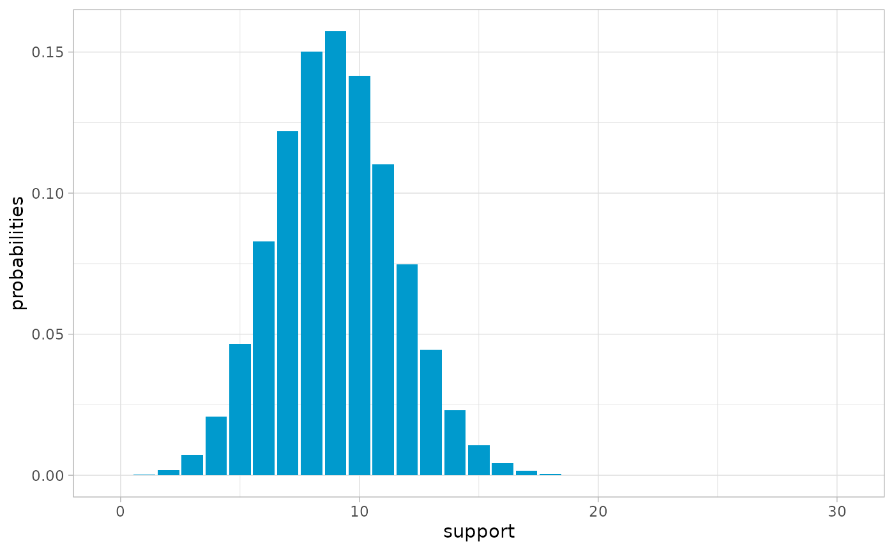
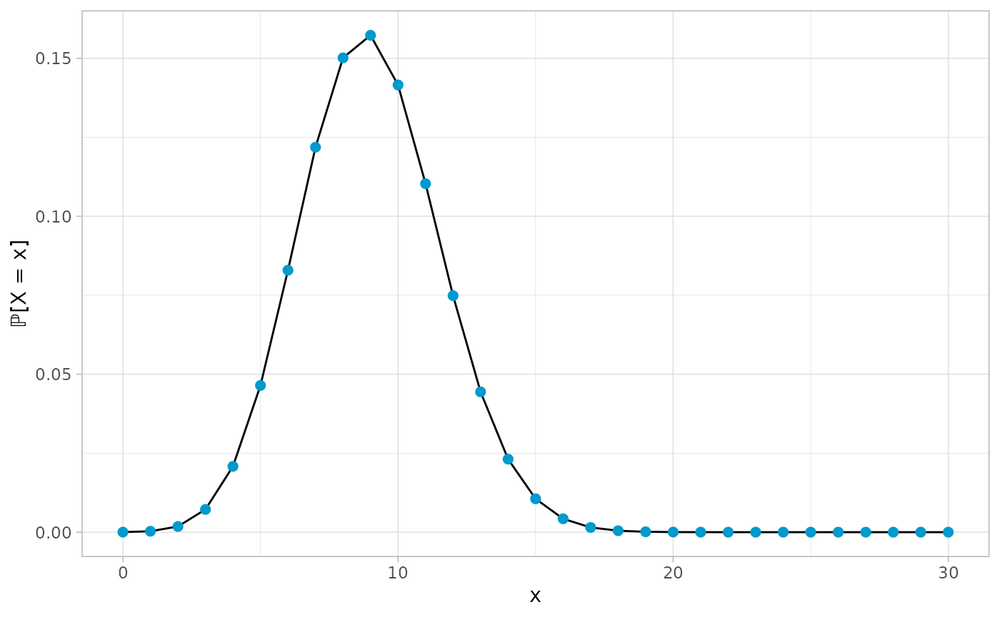
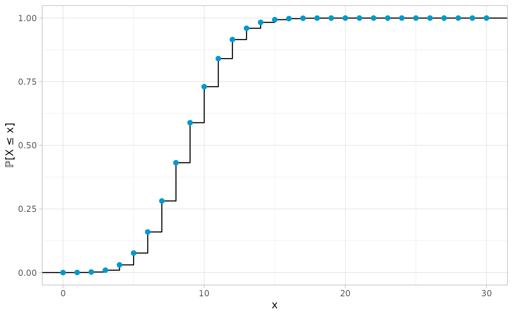

Introduction
introduction.RmdThis vignette provides a short introduction to the ddfr
package. I apologize for it not being typeset beautifully, however as I
created this package for an exercise sheet submission at university, I’m
bound by time constraints.
Nevertheless, this vignette, together with the documentation usable
within R by ? should be more than enough in
order to get started with this package. Although this should become
obvious as this vignette goes on, I’d like to clarify that this vignette
is not to be understood as an extensive documentation. Rather, it only
lists all available features of the package such that one knows what is
possible. Every function listed below has a dedicated help page
in R which should be regarded as its main
documentation.
Lastly, thanks a lot for checking out my package! :)
Overview
After having installed the package (most probably from GitHub), it
can be loaded in R using the following command:
The focus of the package is working with the S4 class
ddf which provides a convenient way to work with discrete
distributions with finite support in R.
Creating new ddf objects
Manually
The intended way to create new ddf objects is to use the
provided function with the same name. It takes as its arguments a
numerical vector specifying the support of the distribution, a second
numerical vector of the same length containing the corresponding
probabilities and lastly, an optional description of the
distribution.
For example, to create a distribution modeling a single throw of a fair six-sided dice, one can use:
ddf(1:6, rep(1 / 6, 6), "A distribution modeling a single dice throw")
#> A distribution modeling a single dice throw
#>
#> Support:
#> [1] 1 2 3 4 5 6
#>
#> Probabilities:
#> [1] 0.1666667 0.1666667 0.1666667 0.1666667 0.1666667 0.1666667In case one does not have probabilities, but absolute frequencies
instead, one can also use ddf_from_frequencies() as an
alternative. For example, the following creates a ddf
object from hypothetical counts of throwing a six-sided dice one hundred
times:
ddf_from_frequencies(1:6, c(19, 14, 17, 18, 15, 17), "My dice throws")
#> My dice throws
#>
#> Support:
#> [1] 1 2 3 4 5 6
#>
#> Probabilities:
#> [1] 0.19 0.14 0.17 0.18 0.15 0.17As one can see, the arguments are mostly the same except for passing the frequencies instead of the probabilities as the second argument.
For more details on both methods consult ?ddf() and
?ddf_from_frequencies(), respectively.
Setters and Getters for ddf objects
We here note that every ddf object has three slots,
called supp, probs and desc which
give the support, the probabilities and the description of the
distribution. They can all be accessed using the getters
supp(), probs() and desc(). For
the description there is also a setter such that it can easily be
changed:
mydist <- ddf(1:6, rep(1 / 6, 6), "My first description")
mydist
#> My first description
#>
#> Support:
#> [1] 1 2 3 4 5 6
#>
#> Probabilities:
#> [1] 0.1666667 0.1666667 0.1666667 0.1666667 0.1666667 0.1666667
supp(mydist)
#> [1] 1 2 3 4 5 6
desc(mydist) <- "This description fits better"
mydist
#> This description fits better
#>
#> Support:
#> [1] 1 2 3 4 5 6
#>
#> Probabilities:
#> [1] 0.1666667 0.1666667 0.1666667 0.1666667 0.1666667 0.1666667Using the already implemented distributions
ddfr provides a large amount of common distributions via
convenient functions. The below list shows the currently implemented
discrete distributions with finite support. To learn more about any
single one of them, use the help in R,
e.g. ?bin().
- Discrete uniform distribution as
unif() - Bernoulli distribution as
bernoulli() - Binomial distribution as
bin() - Rademacher distribution as
rademacher() - Benford’s law as
benford() - Zipf distribution as
zipf() - Hypergeometric distribution as
hypergeometric() - Negative hypergeometric distribution as
negative_hypergeometric() - Beta-binomial distribution as
beta_binomial()
Furthermore, there are also functions to create approximations of the following three discrete distributions with countably infinite support. Once again, for details, we refer to their respective documentation.
- Poisson distribution as
pois() - Negative binomial distribution as
negative_bin() - Geometric distribution as
geometric()
From other ddf objects
Lastly, there is also the possibility to use already existing
ddf objects to create new ones. Currently there are only
two functions for doing so.
The first one is the generic method - with which the
support of a distribution can be multiplied with -1:
-bin(5, 0.8)
#> Binomial distribution with parameters n = 5 and p = 0.8, flipped at the origin
#>
#> Support:
#> [1] -5 -4 -3 -2 -1 0
#>
#> Probabilities:
#> [1] 0.32768 0.40960 0.20480 0.05120 0.00640 0.00032The second one is the function shift() with which the
support of a distribution can be shifted by a specified amount:
Analysis of distributions
ddfr provides many ways to analyze a given distribution.
We only list the corresponding functions below as their documentations
should always be sufficient to understand them.
Moments
-
n-th raw moment as
moment() -
n-th central moment as
central_moment() -
n-th standardized moment as
standardized_moment()
Central tendency
- Expected value as
expected_value()or genericmean() - Modes as
modes()(plural form as they aren’t necessarily unique) - Medians as
medians()(plural form as they aren’t necessarily unique)
Dispersion
- Variance as
variance() - Standard deviation as
standard_deviation() - Range as
distribution_range() - Interquartile range as
iqr()
Further important moments
- Skewness as
skew() - Kurtosis as
kurtosis() - Excess kurtosis as
excess_kurtosis()
Quantiles
- Quantiles as
quantiles() - Percentiles as
percentile() - Deciles as
decile() - Quartiles as
quartile()
Entropy
- Entropy as
entropy()
Report
In case one wants to quickly get an overview of the considered
distribution, there is also the function report() which, as
the name suggests, writes a report on the given distribution:
The given distribution could be described as “Binomial distribution with parameters n = 15 and p = 0.7”.
It has a mean/expected value of 10.5, the average of its mode(s) is given by 11 and the average of its median(s) is 11. It is a unimodal distribution.
Regarding its dispersion, calculating its variance yields 3.15 which implies a standard deviation of 1.77482393492988. When talking about other measures of variability, one can assert that the distribution’s range constitutes 15 over its 16 elements, whereas its interquartile range is given by 3 since the (smallest) first quartile is 9 and the (largest) third quartile is 12.
It has a skewness of -0.225374467927603 (measured using Fisher’s moment coefficient of skewness) and with an excess kurtosis of -0.0825396825396827 (and hence kurtosis of 2.91746031746032) it is a platykurtic, also called platykurtotic, distribution.
Lastly, it can be noted that its entropy, measured in bits, is 2.86637454085645.
Creating new objects from ddf distributions
Creating R functions
One can use pmf and cdf to get
R functions behaving like the probability mass function and
cumulative distribution function for a given distribution, respectively.
Especially the first of these two is rather useful as it can be used to
get the probability of any number:
# Probability of 5 in a binomial distribution with parameters n = 10 and p = 0.7
pmf(bin(10, 0.7))(5)
#> [1] 0.1029193Note that this also works for numbers which are not part of a distribution’s support, in which case the function simply returns 0.
Plotting
ddfr also provides extensive plotting capabilities via
the three functions plot(), plot_pmf() and
plot_cdf(). The first one of these is once again a generic
for the S4 class ddf.
At least when it comes to plots, an image is worth a thousand words, so here are all three functions in action:



Convolutions
Lastly, there is the possibility to calculate convolutions of distributions. For example, to compute the distribution of the sum of two six-sided dice when tossed together, one can use
conv(unif(6), unif(6))
#> A convolution
#>
#> Support:
#> [1] 2 3 4 5 6 7 8 9 10 11 12
#>
#> Probabilities:
#> [1] 0.02777778 0.05555556 0.08333333 0.11111111 0.13888889 0.16666667
#> [7] 0.13888889 0.11111111 0.08333333 0.05555556 0.02777778
# Short hand using *
unif(6) * unif(6)
#> A convolution
#>
#> Support:
#> [1] 2 3 4 5 6 7 8 9 10 11 12
#>
#> Probabilities:
#> [1] 0.02777778 0.05555556 0.08333333 0.11111111 0.13888889 0.16666667
#> [7] 0.13888889 0.11111111 0.08333333 0.05555556 0.02777778The second example shows how the generic * has also been
defined for objects from the ddf class to quickly convolve
distributions.
The function conv_n() calculates the n-th fold convolution of a distribution with
itself, see ?conv_n() for details.
Lastly, there is also the function convolve_cpp() which
is the underlying implementation for the convolution using
Rcpp for better performance. It is not really intended for
use with ddfr objects directly, but might still be useful
in many other applications.